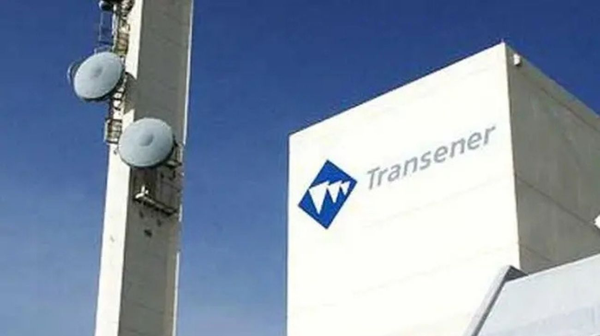

El consorcio de Genneia y Edison lideran la licitación de Transener con una oferta de US$356 millones
La adjudicación formal está prevista para mayo y representará un ingreso de más de US$356 millones para el Tesoro.

El gobierno nacional concretó este martes la apertura de las ofertas económicas para la venta del 100% de la participación estatal en CITELEC S.A., la sociedad controlante de Transener, principal operadora de transmisión eléctrica en alta tensión del país. Tres empresas presentaron propuestas: el consorcio conformado por Genneia S.A. y Edison Transmisión S.A. encabezó el proceso con una oferta de US$356.174.811, seguida por Central Puerto con US$301 millones y Edenor con US$230 millones. La suma total de las tres propuestas alcanzó los US$887 millones, muy por encima del precio base fijado originalmente en US$206 millones, lo que refleja el alto valor estratégico que el sector privado le asigna al activo. La adjudicación formal está prevista para el mes de mayo, conforme al cronograma establecido.
Lo que se pone en juego es considerable. Transener opera más de 12.600 kilómetros de líneas en 500 kV que atraviesan el país de norte a sur, desde Jujuy hasta Santa Cruz, y junto a su subsidiaria Transba responde por el 85% de la transmisión eléctrica nacional. Es el único operador de alta tensión del país, con una disponibilidad superior al 99,7% y más de 1.770 empleados distribuidos en cinco regiones operativas. Quien se quede con CITELEC —que detenta el 52,65% del capital accionario de Transener a través de acciones clase A, las que otorgan el control— también pasará a gestionar Transener Internacional Ltda., con operaciones en Brasil, y Transba SA, sumando así una red de más de 20.000 kilómetros de líneas de alta y media tensión y 160 estaciones transformadoras. El proceso se realizó sin impugnaciones, en el marco del Decreto 286/2025 y la Resolución 540/2026 del Ministerio de Economía, con supervisión de la Agencia de Transformación de Empresas Públicas.
El consorcio ganador tiene un perfil que no pasa inadvertido. Genneia es la principal generadora de energías renovables del país, con más de 1.580 MW de capacidad instalada en parques eólicos y solares, y desde enero de 2026 la conduce Jorge Brito, hijo del fundador del Banco Macro. El Grupo Edison, su socio en esta licitación, está conformado por los hermanos Patricio y Juan Neuss —con vínculos cercanos al asesor presidencial Santiago Caputo—, además de Carlos Giovanelli, Damián Pozzoli, Guillermo Stanley, Federico Salvai —dueño de Havanna y Aspro—, y los empresarios Rubén Cherñajovsky y Luis Galli, propietarios de Newsan. Esta es ya la tercera privatización que se adjudica al grupo de los Neuss durante la actual administración, lo que generó comentarios en el mercado sobre la concentración de activos estratégicos en manos de un mismo círculo empresarial.
La operación se enmarca en el plan de privatizaciones que el ministerio de Economía proyecta completar antes de fin de año, con el objetivo de recaudar alrededor de US$2.000 millones. Además de Transener, el gobierno tiene en carpeta la privatización de Intercargo, AySA y las centrales térmicas Manuel Belgrano y San Martín. El antecedente inmediato es la venta de las represas hidroeléctricas del Comahue, que aportó más de US$700 millones destinados al pago de vencimientos de deuda. En este caso, los fondos que ingrese la venta de Transener se sumarán a las reservas del Tesoro en un momento donde el frente externo muestra solidez, pero la agenda financiera del segundo semestre demanda liquidez. El sector privado ya tiene las llaves de la red eléctrica más importante del país: ahora deberá demostrar que puede hacer crecer una infraestructura que el Estado administró durante décadas.